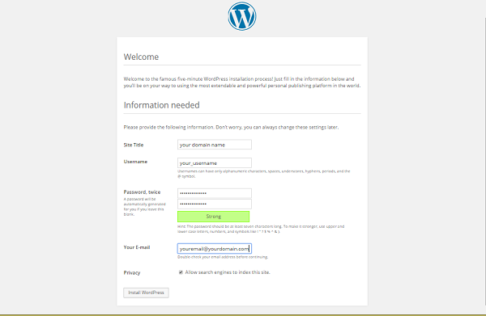
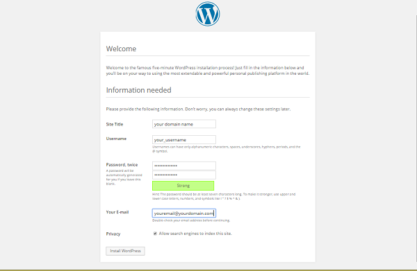

http://your_domain_name_or_IP
You are redirected to the WordPress admin page:
http://server_domain_name_or_IP/wp-admin/install.php
WordPress then prompts you to log in again with your new credentials. Do so now and click Log In.

Installing Wordpress on a LAMP server for Debian.
Difficulty: 1
Time: 15 minutes
WordPress has become much more than its humble beginnings in 2003 as a self-hosted blogging tool. It is the Internet’s leading content management system (CMS). This open-source CMS powers all types of sites, including many major brands. With a MySQL and PHP architecture, WordPress is easy to install and has endless options for website configuration thanks to tens of thousands of plugins and themes from its rich and active community.
This article walks you through setting up WordPress on a Debian system. The steps are for a non-root user with sudo, or administrative privileges.
Make sure that you that have a non-root user with sudo (administrator) privileges set up. You also need a Linux, Apache, MySQL, and PHP (LAMP) stack configured. Be sure that Apache, MySQL, and PHP are up and running.See Build a LAMP stack (Linux, Apache, MySQL, PHP) – Debian.
As you install the software, note your MySQL root account (administrator) password. You need it for these tasks.
Set up your MySQL database with an administrator so that WordPress has a place to store all your site and user information.
Remember: All MySQL code statements must end with a semi-colon (;).
GRANT is one of the account management statements the MySQL server notices and loads into memory right away. So a manual reload/restart should not be necessary. But if you like, you can check the permissions using SHOW GRANTS.FLUSH forces a reload of the cache.
tar.gz or zip format. We'll get the tar.gz file.
wget.
This URL always links to a compressed file of the latest stable version of WordPress.
This command creates a directory called wordpress in your home directory.
/var/www/.
www-data, ownership values to allow Apache to interact with the content.
index.html page so that you can see your WordPress site:
MySQL settings…), and enter your corresponding values of the three DB_ variables (database name, database username, mysql root password) with the credentials you just created.
Use the credentials that you just created.
Good news! The rest of your installation uses the WordPress web interface.
http://server_domain_name_or_IP/wp-admin/install.php
WordPress then prompts you to log in again with your new credentials. Do so now and click Log In.
All finished! The dashboard of your new site displays.

Congratulations! You have installed WordPress and created the beginning of your own website.
From here you have many options for customizing your WordPress setup. A popular one is to make pretty permalinks. See Set up WordPress Pretty Permalinks on Apache – ALL DISTROS for a step-by-step guide.
For a how-to on installing WordPress on a LEMP stack, see Install WordPress on your LEMP server – Debian.